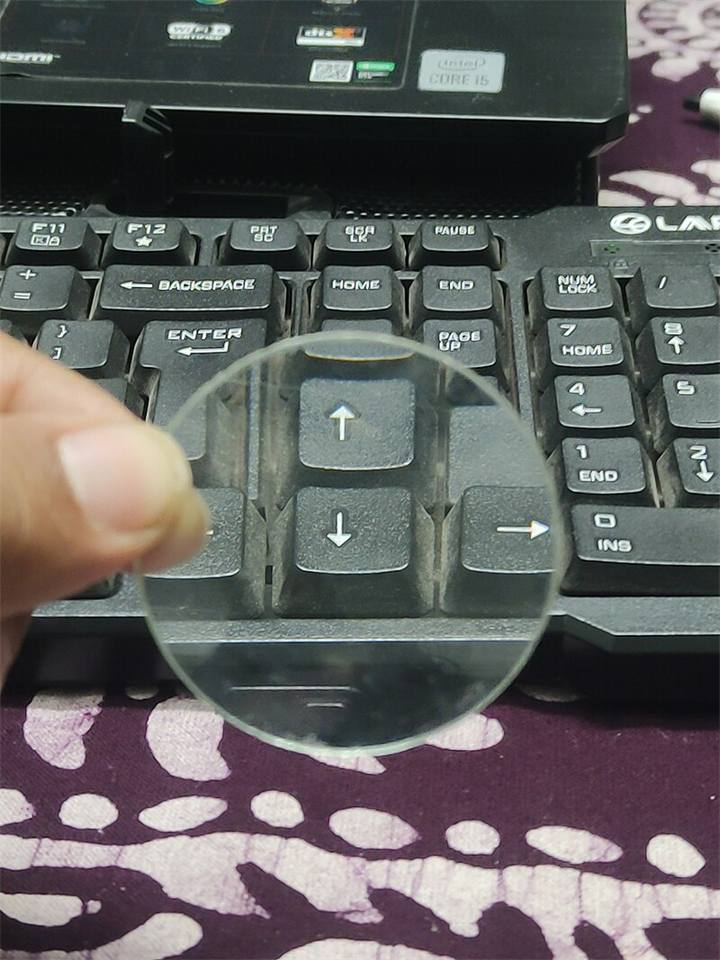
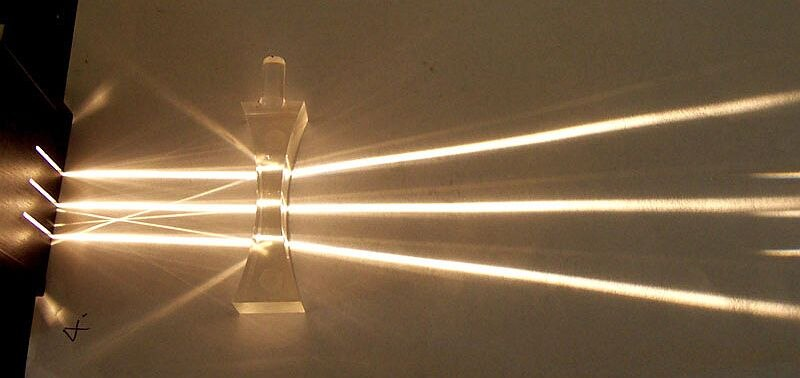

甲
量焦距與架設裝置
最小最亮的點 → 焦距；光源—透鏡—紙屏
目的：改變光源、透鏡及紙屏的相對位置，探討透鏡的成像性質。預測與材料核對填活動紀錄本。
-
1 量凸透鏡焦距 f：平行光（太陽或手電筒）經透鏡，在白紙找最小、最亮的點
- 該點到鏡面的距離＝焦距 f
- 太陽光可視為平行光；手電筒宜放遠一點再對準
- 我們量得 f ≈ cm
- 2 架設：已知焦距的凸透鏡固定於紙屏與光源之間
- 3 名詞：光源到鏡心＝物距；紙屏到鏡心＝像距
安全提醒：用蠟燭當光源務必注意火源；移動紙屏時勿碰倒透鏡與蠟燭。


紙屏前後移動，是在找光線真的會聚的位置